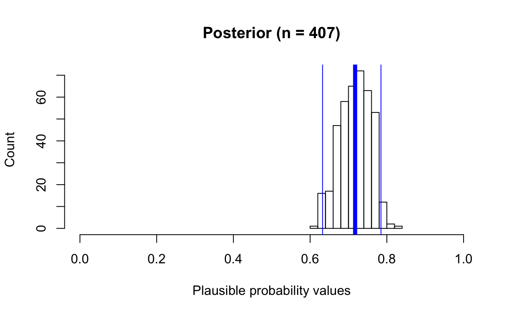
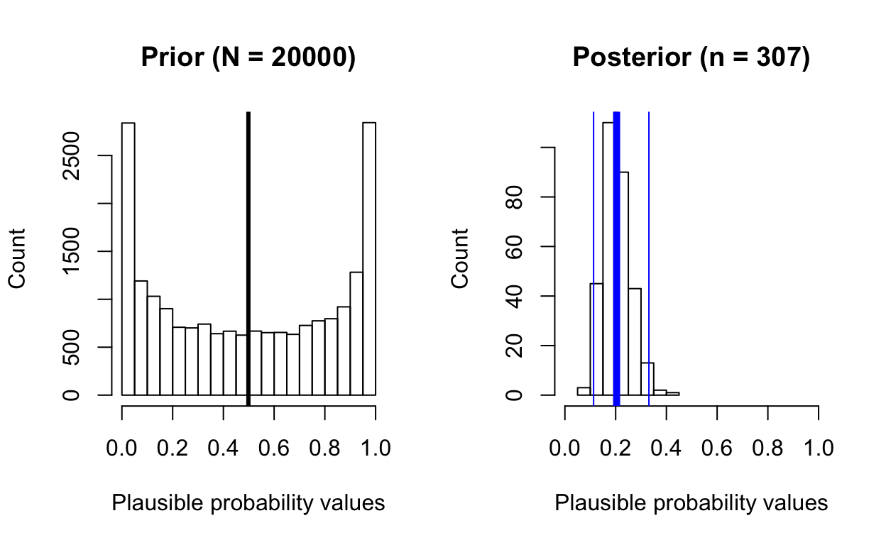
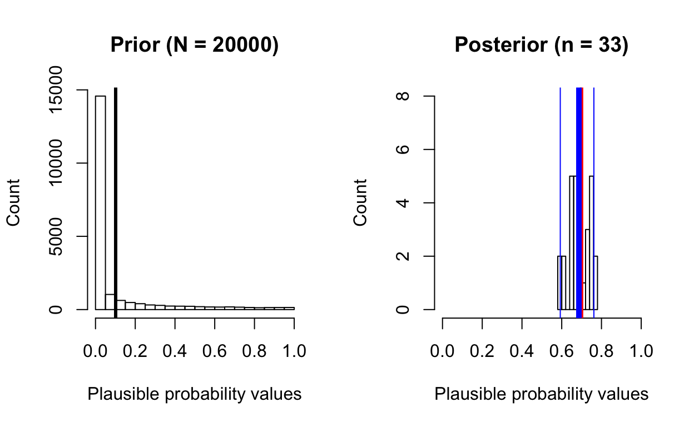
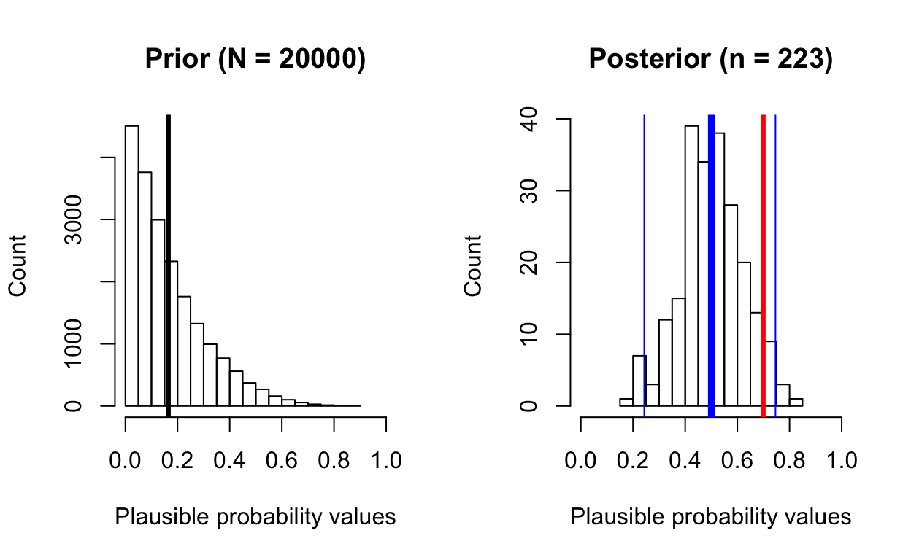

Table of Contents
Get source code for this RMarkdown script here.
Bayesian inference, priors, likelihood, posteriors, and especially Markov Chain Monte Carlo sampling can be mysterious. I will try to explain these concepts with a simple 1-dimensional example, using something known as rejection sampling, which is good for explaining how sampling works, but is never used in practice because it is highly inefficient (we’ll see what that means later on).
Binomial distribution example (life or death, heads or tails)
In a hospital, there are a total of 100 patients suffering from different deadly diseases. Doctor X is very optimistic and thinks that 83% of the patients will survive after 2 days. That is, Doctor X is expecting 83 patients to survive and 17 to die. This situation is like typical coin-toss scenarios, where survive is heads (coded 1) and death is tails (coded 0). Coin tosses and our scenario can be described using the binomial distribution.
Let’s generate some random data assuming we have 100 patients and 83% survival probability. Because the number is randomly generated from a binomial distribution (n = 100 and success = 83), we might not get exactly 83 as the output.
n_patients <- 100 # number of patients
survive_probability <- 0.83 # probability of surviving
number_of_simulations <- 1
rbinom(n = number_of_simulations, size = n_patients, prob = survive_probability)
[1] 76Let’s repeat the scenario/simulation 10 times. Because the numbers are randomly generated from a binomial distribution (n = 100 and success = 83), we get slightly different numbers for each simulation. But these numbers should be close to 83.
number_of_simulations <- 10
rbinom(n = number_of_simulations, size = n_patients, prob = survive_probability)
[1] 86 78 89 87 88 81 83 83 87 83Representing beliefs about probability with the beta distribution
Doctor X believes 83% of the 100 patients will survive. In other words, he believes 83% is the most likely survival probability, whereas 82% and 84% are also likely, but less likely than 83%. We can represent Doctor X’s belief using a beta distribution, which is useful for describing probabilities because it ranges from 0 to 1, and has two parameters that define the shape of the distribution.
If you’re not familiar with the beta distribution, here are the key properties of the beta distribution:
- it ranges from 0 to 1
- shape1 and shape2 parameter can be thought of as the “success” and “failure” parameters
- shape1 and shape2 are known as the alpha and beta parameters
Below are the shapes of beta distributions with different shape1 and shape2 parameters. As shown below, the beta distribution is very flexible and changing the two parameters of the distribution can change the shape of the distribution drastically!
par(mfrow = c(2, 3)) # display subplots in a 2 x 3 grid
curve(dbeta(x, shape1 = 1.0, shape2 = 1.0), from = 0, to = 1) # uniform
curve(dbeta(x, shape1 = 1.2, shape2 = 1.2), from = 0, to = 1)
curve(dbeta(x, shape1 = 4, shape2 = 4), from = 0, to = 1) # normal looking
curve(dbeta(x, shape1 = 0.5, shape2 = 0.5), from = 0, to = 1) # u-shape
curve(dbeta(x, shape1 = 5, shape2 = 2), from = 0, to = 1) # success more likely than failure
curve(dbeta(x, shape1 = 3, shape2 = 6), from = 0, to = 1) # failure more likely than success
We can represent Doctor X’s belief with this beta distribution. Doctor X believes that 83% survival is the most likely to occur, and 40% survival is about half as likely to occur, but what this beta distribution says is that Doctor X believes that different survival probabilities ranging from 0 to 1 are plausible, even though he believes that 83% is most likely to occur.
par(mfrow = c(1, 1)) # change back to showing plots in a 1 x 1 grid
curve(dbeta(x, shape1 = 3.5, shape2 = 1.5), from = 0, to = 1,
xlab = "Plausible probabilities (survival percent or proportion)",
ylab = "Likelihood",
main = "Doctor X's belief")
abline(v = 0.83, col = "black", lwd = 3)
In Bayesian terminology, Doctor X’s belief is his prior (prior beliefs), \(P(\theta)\).
After 2 days, only 72 patients survived (28 died). Doctor X’s priors were not too accurate, it seems. Before we discuss how Doctor X should update/revise his beliefs, let’s return to our simulations from earlier on to see how rare/frequent it is to get 72 survivals (out of 100), assuming that we believe that 83% should survive.
n_patients <- 100 # number of patients
survive_probability <- 0.83 # probability of surviving
number_of_simulations <- 1
rbinom(n = number_of_simulations, size = n_patients, prob = survive_probability)
[1] 88Run rbinom(n = number_of_simulations, size = n_patients, prob = survive_probability) a few more times and see if you manage to get 72? You might never see any 72s. But if you keep trying, you eventually will!
Rather than manually re-run the function, let’s run 100,000 simulations to see how many 72s we observe.
number_of_simulations <- 100000
simdata <- rbinom(n = number_of_simulations, size = n_patients, prob = survive_probability)
sum(simdata == 72) # total number of simulations that resulted in 72 survivals
[1] 223Only 223 of 100000 simulations (assuming 83% survival probability) generated 72 survivals!
Remember, 83% is just one of the plausible parameter probability values in Doctor X’s prior beliefs distribution. See beta distribution reflecting his beliefs for the entire range of probability values in the figure above! 72% might not be as likely as 83% in his prior beliefs distribution, but it’s still fairly likely to occur!
Let’s run another 100,000 simulations to see how many 72s we can get, assuming the prior belief of survival is 72%.
n_patients <- 100 # number of patients
survive_probability <- 0.72 # probability of surviving
number_of_simulations <- 100000
simdata <- rbinom(n = number_of_simulations, size = n_patients, prob = survive_probability)
sum(simdata == 72) # total number of simulations that resulted in 72 survivals
[1] 8737This time, 8737 of 100000 simulations generated 72 survivals!
Now, we’re ready to understanding rejection sampling, MCMC, and how prior information and likelihood combine to form the posterior!
Generate prior distribution by randomly creating data
First, let’s generate random samples to create Doctor X’s prior distribution. Remember, we’re using the beta distribution (ranges from 0 to 1) to generate probability values reflecting Doctor X’s beliefs.
n_patients <- 100 # number of patients
survive_probability <- 0.83 # probability of surviving
prior_nsamples <- 20000
priordist <- rbeta(n = prior_nsamples, shape1 = 3.5, shape2 = 1.5)
head(priordist) # probability values
[1] 0.1350260 0.4377662 0.6463718 0.2155319 0.4606485 0.5579412It’s always good to plot and visualize how your distributions look like.
hist(priordist, main = paste0("Doctor X's prior", " (prior samples = ", length(priordist), ")"),
xlab = "Plausible probability values", ylab = "Count", xlim = c(0, 1))
abline(v = survive_probability, col = "black", lwd = 3)Define likelihood (generative model) and simulate data samples
The likelihood, \(P(data|\theta)\), is the generative model, the theoretical model we think is generating the data.
Earlier on, we have only generated data with rbinom() assuming 83% and 72% survival. The prob parameter in the rbinom() function actually allows you to provide more than 1 probability at a time, which means we can enter the entire range of probability values ranging from 0 to 1 that reflects Doctor X’s prior belief beta distribution.
length(priordist)
[1] 20000
head(priordist)
[1] 0.1350260 0.4377662 0.6463718 0.2155319 0.4606485 0.5579412
simulated_data <- rbinom(n = length(priordist), size = n_patients, prob = priordist)
length(simulated_data)
[1] 20000
head(simulated_data)
[1] 15 46 56 14 53 52If rbinom(n = length(priordist), size = n_patients, prob = priordist) doesn’t make sense, stop and think about what’s going on… For each value in the prior distribution priordist (continuous values 0 to 1 generated from the beta distribution reflecting Doctor X’s prior beliefs), we simulated (randomly generated) data from a binomial distribution with 100 patients (size = n_patient) and a specific survival probability (0.135026 in the first simulation).
Identify samples that match our observed outcome
sim_equals_observed_boolean <- simulated_data == 72 # "combine" prior with data
head(sim_equals_observed_boolean)
[1] FALSE FALSE FALSE FALSE FALSE FALSEIdentify prior samples associated with samples that match observed outcome to get the posterior!
posterior <- priordist[sim_equals_observed_boolean] # "combine" prior with data
length(posterior)
[1] 385
head(posterior)
[1] 0.8121576 0.6988426 0.7485535 0.7429733 0.7144441 0.7295646Yes, this posterior is the Bayesian posterior, \(P(\theta|data)\), the probability of your theory given the data, or Doctor X’s updated/revised beliefs! We have combined the prior, \(P(\theta)\) with the likelihood, \(P(data|\theta)\) to get the posterior, \(P(\theta|data)\). Below is Bayes’ theorem:
\[P(\theta|data) = \frac{P(data|\theta)P(\theta)}{P(data)}\]
Rejection sampling: Note that we have only 385 samples in our posterior distribution, even though we started off with 20000 samples in the prior! We have rejected all the prior samples that fail to generate 72 survivals (observed outcome) during our simulations. Hence the term “rejection sampling”. Rejection sampling is highly inefficient because we reject or throw out many samples! In practice, we never use rejection sampling, but it’s good to illustrate MCMC principles and how sampling works to combine the prior with the data to produce the posterior.
Summarize posterior samples
mean(posterior)
[1] 0.7213848
median(posterior)
[1] 0.7189539
quantile(posterior, c(0.025, 0.975))
2.5% 97.5%
0.6285226 0.8117400 Compare prior and posterior
hist(priordist, main = paste0("Doctor X's prior", " (prior samples = ", length(priordist), ")"),
xlab = "Plausible probability values", ylab = "Count", xlim = c(0, 1))
abline(v = 0.83, col = "black", lwd = 3)
hist(posterior, main = paste0("Posterior", " (n = ", length(posterior), ")"),
xlab = "Plausible probability values", ylab = "Count", xlim = c(0, 1))
abline(v = mean(posterior), col = "blue", lwd = 5)
abline(v = quantile(posterior, c(0.025, 0.975))[1], col = "blue", lwd = 1)
abline(v = quantile(posterior, c(0.025, 0.975))[2], col = "blue", lwd = 1)
Create a simple function for further simulations and exploration
posterior_from_prior <- function(total_patients, total_survive,
prior_samples, prior_beta_shape1 = 1, prior_beta_shape2 = 1) {
survive_propr <- total_survive/total_patients
priordist <- rbeta(n = prior_samples, shape1 = prior_beta_shape1, shape2 = prior_beta_shape2)
simulated_data <- rbinom(n = length(priordist), size = total_patients, prob = priordist)
posterior <- priordist[simulated_data == total_survive]
par(mfrow = c(1, 2))
hist(priordist, main = paste0("Prior", " (N = ", length(priordist), ")"),
xlab = "Plausible probability values", ylab = "Count", xlim = c(0, 1))
abline(v = mean(priordist), col = "black", lwd = 3)
hist(posterior, main = paste0("Posterior", " (n = ", length(posterior), ")"),
xlab = "Plausible probability values", ylab = "Count", xlim = c(0, 1))
abline(v = survive_propr, col = "red", lwd = 3)
abline(v = mean(posterior), col = "blue", lwd = 5)
abline(v = quantile(posterior, c(0.025, 0.975))[1], col = "blue", lwd = 1)
abline(v = quantile(posterior, c(0.025, 0.975))[2], col = "blue", lwd = 1)
print(paste0("posterior mean: ", round(mean(posterior), 2)))
print(paste0("posterior median: ", round(median(posterior), 2)))
par(mfrow = c(1, 1))
}Exploring different parameters (sample size, prior shapes)
Try different parameters yourself to get a better sense of how things work.
Line colors
- black: prior mean
- blue: posterior mean (thin blue lines are 2.5% and 97.5% intervals)
- red: observed value/data
posterior_from_prior(total_patients = 50, total_survive = 10,
prior_samples = 20000,
prior_beta_shape1 = 0.5, prior_beta_shape2 = 0.5)
[1] "posterior mean: 0.21"
[1] "posterior median: 0.2"
posterior_from_prior(total_patients = 100, total_survive = 70,
prior_samples = 20000,
prior_beta_shape1 = 0.1, prior_beta_shape2 = 0.9)
[1] "posterior mean: 0.69"
[1] "posterior median: 0.7"Despite the skewed prior, the posterior distribution reflects the true value (70/100 = 0.7), but note how few samples we have in the posterior distribution!
posterior_from_prior(total_patients = 10, total_survive = 7,
prior_samples = 20000,
prior_beta_shape1 = 1.0, prior_beta_shape2 = 5.0)
[1] "posterior mean: 0.51"
[1] "posterior median: 0.5"This time, notice how the terribly skewed prior prevents the sampler from properly “exploring” the full range of the posterior distribution, which doesn’t capture the data well (7/10 = 0.7 survival).